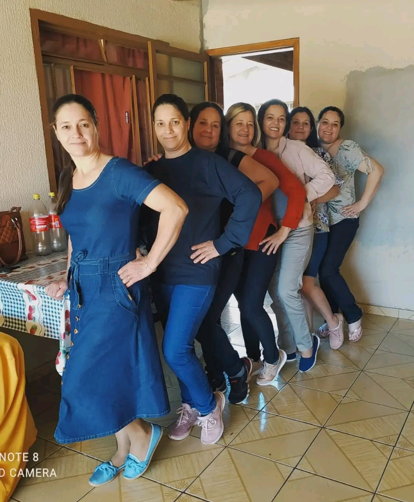

Os antepassados da minha família são divididos em duas etnias,
a portuguesa e a italiana, tanto por parte de pai como de mãe, acredito que ja estamos estabelecidos no Brasil a mais de 90 anos :Minha família tem uma tradição antiga na agricultura. Começou lá atrás, com meu bisavô, e foi passando de pais para filhos. A gente aprendeu muito sobre cuidar da terra ao longo dos anos e sempre deu um jeito de se adaptar às mudanças. Pra nós, a agricultura não é só um jeito de ganhar dinheiro, é parte do que a gente é. Trabalho duro, respeito pela natureza e união familiar são valores que a gente leva a sério. Essa tradição nos inspira a cuidar do nosso legado e a construir um futuro bacana pra todo mundo da família. : Nossa família é bem diversificada, tem gente de várias idades e origens. Tem quem mora em Tamarana, curtindo a vida no campo, e outros que preferem Londrina, com mais agito e oportunidades. Apesar da distância, a gente sempre se mantém em contato e se reúne quando dá. A família é nosso porto seguro, onde a gente sempre encontra amor e apoio, não importa onde estejamos.
Familiares

CURIOSIDADES
Um membro é conhecido por fazer o melhor churrasco do bairro.
Seu avô viajou por algumas cidades do Brasil durante a juventude e trouxe lembranças de cada lugar que visitou.
Todo ano, a família se reúne para um dia de jogos e competições no quintal.
Seu bisavô foi um dos primeiros agricultores da região.
Um tio seu é apaixonado por colecionar moedas antigas.